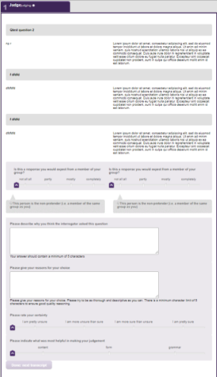

The application has been tested over many iterations, but it is always possible that features added later in the development process could introduce unwanted side-effects. It is recommended that two identical versions of the application are created, either on separate servers, or as separate sub-domains on the same server. One should be the production server that collects data from live experiments, the other should be treated as a staging server to test configurations and experimental setups.
*Note: the instance of imgame currently in use by the Cardiff research team does not have a staging instance, but could be created fairly quickly if use increases.
Testing on the staging server can be performed in one of two ways:
Step1 uses very specific web technology (websockets) to provide the real-time connection data and messaging. Any browser can be used except Internet Explorer which doesn’t support websockets. Microsoft’s replacement for Internet Explorer (Edge) can be used for Step1. However, most of the testing for all phases of the application has been done using Chrome and Firefox.
It is strongly recommended that any computer room used for a Step1 session be tested in advance to check that there are no firewall issues that would block transmission of websockets. If advance testing indicates there is a problem, then the local IT services may be able to enable the specific port (8080) required by the websockets components.
The Step2 and Step4 runtime software injects all the content configured for that step to the browser page, but may not use it all depending on other settings (surveys, alignment etc). This content is transmitted in internal XML messages and the client-side code in the browser will fail if any of the XML nodes are empty. For this reason the software checks all content and inserts ‘.’ If the content has been left empty. But if either of these steps fails by appearing to hang then check that all content is configured correctly.
|  |